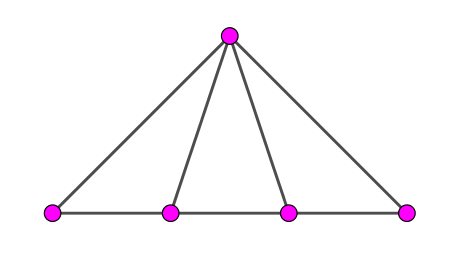

众所周知，轮图 (Wheel Graph) $W_n$ 的生成树问题是一个非常经典又古老的问题。早在 1971 年，就有人得出了 $n + 1$ 阶轮图 $W_n$ 的生成树个数 $ST \left( W_n \right) = f_{2n-1} + f_{2n+1} - 2$，其中 $f_0 = 0, f_1 = 1$ 为 Fibonacci 数。
在 2007 年的 FJOI 中，有一道省选题 ([FJOI2007]轮状病毒) 就是一道求轮图 $W_n$ 生成树的裸题。
因此，如果知道这个公式，那么在场就很可能秒了此题。
在那道题的题解中，我们给出了一个基于 Kirchhoff's Matrix-Tree 定理 + 行列式的初等变换的解法。如果你们看过的话，一定会觉得这个解法过于繁琐。下面，我们通过给出一个更简单的做法，来得到同样的结果。
首先，我们来介绍一下这篇文章所需要的前置技能：
前置技能：Fibonacci 数及其性质、生成函数基础、图论概念梳理。
第一部分：Fibonacci 数及其性质 (此为前置技能，点此跳过)
ps: 这里 Fibonacci 数的定义遵循传统定义：$f_0 = 0, f_1 = 1, f_n = f_{n-1} + f_{n-2} (n > 1)$。如果你们所学的 Fibonacci 数的定义与之不同，请自行调整 offset (平移量)。
定理 1.1：$f_n = \dfrac {\phi^n - \hat\phi^n} {\sqrt 5}$，其中 $\phi = \dfrac {1 + \sqrt 5} 2, \hat\phi = \dfrac {1 - \sqrt 5} 2$。
这个定理又被称为 Binet 公式，下面大多数的结论都可以由这个 "暴力" 证明。不过谁会这样做呢~
定理 1.2：$f_2 + f_4 + f_6 + \cdots + f_{2n} = f_{2n+1} - 1$。
当 $n = 1$ 时，$f_2 = 1 = f_3 - 1$。设命题对 $n - 1$ 成立，对 $n$ 时只需证明 $f_{2n} = f_{2n+1} - f_{2n-1}$，而这就是 Fibonacci 数的定义。
性质 1.3：Fibonacci 数的生成函数 $\displaystyle F(x) = \sum_{i=0}^{\infty} f_i x^i = \dfrac x {1 - x - x^2}$。
推论 1.1：偶数项 Fibonacci 数的生成函数 $\displaystyle F_e(x) = \sum_{i=0}^{\infty} f_{2i} x^i = \dfrac x {1 - 3 x + x^2}$。
因为 $\displaystyle \sum_{i=0}^{\infty} f_{2i} x^{2i} = \dfrac {F(x) + F(-x)} 2 = \dfrac {x^2} {1 - 3 x^2 + x^4}$，所以 $\displaystyle \sum_{i=0}^{\infty} f_{2i} x^i = \dfrac x {1 - 3 x + x^2}$。
第二部分：图论与生成树 (点此跳过，喵喵喵？)
我们用 $ST(G)$ 表示无向图 $G$ 的生成树个数。如果 $G$ 不连通则 $ST(G) = 0$。
记号同图论概念梳理，则对任意一条边 $e \in G$，有下述结论成立：
定理 2.1：$ST(G) = ST \left( G \setminus \{e\} \right) + ST \left( G \cdot e \right)$。
图 $G$ 的生成树分为两类：不包含边 $e$ 的，共 $ST \left( G \setminus \{e\} \right)$ 个；包含边 $e$ 的，共 $ST \left( G \cdot e \right)$ 个。故结论成立。
接下来，在本篇文章，我们临时定义一种新的图，称其为 "扇图" $L_n$ (在其它环境下没有这个定义)：若 $G = \left( V, E \right)$ 满足，存在一个点 $v$ 为支配点，其它点之间构成一条简单路径，则称 $G$ 为 "扇图"，$n + 1$ ($n \geq 1$) 阶扇图记作 $L_n$。
如，下图是一个 $5$ 阶扇图 $L_4$：
在求 $W_n$ 的生成树前，先来求 "扇图" $L_n$ 的生成树个数。
定理 2.2：$n + 1$ 阶扇图的生成树个数 $ST \left( L_n \right) = f_{2n}$。
在这里给出三个证明，大家可以幸运三选一。
考虑 "外圈" 的 $n$ 个顶点 (如上图，就是下面的 $4$ 个顶点)。在生成树中，一定是 "成段" 出现的。
这个意思是说，如果只看下面 $n$ 个顶点的边，它们所形成的连通块一定是若干个区间的直并。比如，$n = 8$ 时，可以是 $\left[ 1, 3 \right] \cup \left[ 4, 5 \right] \cup \left\{ 6 \right\} \cup \left[ 7, 8 \right]$。
设各个区间的大小分别为 $a_1, a_2, \cdots, a_k$，则上面的点连 "下来" 的方案数为 $a_1 a_2 \cdots a_k$。
于是答案就等于，枚举和为 $n$ 的数组，对这些数组的乘积求和。
使用生成函数，设 $f(x) = x + 2 x^2 + 3 x^3 + \cdots + n x^n + \cdots = \dfrac x {(1 - x)^2}$。
则答案的生成函数 $Ans = f + f^2 + f^3 + \cdots = \dfrac f {1 - f} = \dfrac x {1 - 3 x + x^2}$。
由推论 1.1，$ST \left( L_n \right) = f_{2n}$。
用归纳法。考察一个度为 $2$ 的节点 $v$ (如上图，就是左下角的顶点) 的连边情况。设支配点 ("根") 为 $r$ (即图中最上面的节点)。
如果 $\left( v, r \right) \notin E$，则它只能和它的另外一个邻点相连，因此共有 $f_{2n-2}$ 种情形。
如果 $\left( v, r \right) \in E$，我们考虑 $v$ "向右延伸"到哪个位置，设一共延伸了 $i$ 个节点 ($i = 1, 2, \cdots, n$)，则剩下部分相当于一个 $L_{n-i}$，共有 $f_{2(n-i)}$ 种方案。特别地，当 $i = n$ 时，有 $1$ 种方案。
使用定理 1.2，$ST \left( L_n \right) = f_{2n-2} + f_{2n-2} + f_{2n-4} + \cdots + f_4 + f_2 + 1 = f_{2n-2} + f_{2n-1} - 1 + 1 = f_{2n}$。
这个证明比较重要 (不知道大家选对了没有，不是说选 C 正确率最高嘛)。它引入了两个新的图—— $1-$扇图和 $2-$扇图。
设扇图 $L_n$ 中两个度为 $2$ 的节点分别为 $u, v$，支配点 ("根") 为 $r$。则在扇图 $L_n$ 中加入 $(u, r)$ 这条重边 (或 $(v, r)$，同构的) 所得的图称为 $1-$扇图，记为 $L^*_n$，同时加入 $(u, r), (v, r)$ 这两条重边所得的图称为 $2-$扇图，记为 $L^\#_n$。
接下来，我们同时证明定理 2.2 以及另一个结论：$ST \left( L^*_n \right) = f_{2n+1}$。
取 $L_n$ 中的边 $(u, r)$，使用定理 2.1，可得：
$$ ST \left( L_n \right) = ST \left( L_{n-1} \right) + ST \left( L^*_{n-1} \right) \tag 1 \label 1 $$
取 $L^*_n$ 中的一条重边，使用定理 2.1，可得：
$$ ST \left( L^*_n \right) = ST \left( L_n \right) + ST \left( L^*_{n-1} \right) \tag 2 \label 2 $$
由于 $ST \left( L_1 \right) = 1, ST \left( L^*_1 \right) = 2$，因此由 $\eqref 1 \eqref 2$，下面的数列
$$ 0, 1, ST \left( L_1 \right), ST \left( L^*_1 \right), ST \left( L_2 \right), ST \left( L^*_2 \right), \cdots, ST \left( L_{n-1} \right), ST \left( L^*_{n-1} \right), ST \left( L_n \right), ST \left( L^*_n \right), \cdots $$
就是 Fibonacci 数列！所以原结论成立，$ST \left( L_n \right) = f_{2n}$。
好的，我知道你们都选了证明三。不过其它两个证明思路还是有一些参考价值的。
定理 2.3：$ST \left( L^\#_n \right) = f_{2n+2}$。
任取 $L^\#_n$ 中的一条重边，使用定理 2.1，可得：
$$ ST \left( L^\#_n \right) = ST \left( L^*_n \right) + ST \left( L^\#_{n-1} \right) $$
由于 $ST \left( L^\#_2 \right) = 8 = f_6$，因此易证 $ST \left( L^\#_n \right) = f_{2n+2}$。
第三部分：轮图的生成树
先定义 $1-$轮图 $W^*_n$ 为，对于一个轮图 $W_n$，设支配点 (中心点，根) 为 $r$。任取与 $r$ 关联的一条边 $(r, s)$，在 $W_n$ 中加入 $(r, s)$ 这条重边，所得的图称为 $1-$轮图，记为 $W^*_n$。
定理 3.1：$ST \left( W_n \right) = f_{2n-1} + f_{2n+1} - 2$。
取 $W_n$ 外边界上 (圈上) 的边，使用定理 2.1，可得：
$$ ST \left( W_n \right) = ST \left( L_n \right) + ST \left( W^*_{n-1} \right) = f_{2n} + ST \left( W^*_{n-1} \right) \tag 3 \label 3 $$
取 $W^*_n$ 中的一条重边，使用定理 2.1，可得：
$$ ST \left( W^*_n \right) = ST \left( W_n \right) + ST \left( L^\#_{n-1} \right) = ST \left( W_n \right) + f_{2n} \tag 4 \label 4 $$
$\eqref 3 \gets \eqref 4$，得
$$ ST \left( W_n \right) = ST \left( W_{n-1} \right) + f_{2n} + f_{2n-2} $$
又因为 $ST \left( W_3 \right) = 16 = f_5 + f_7 - 2$，因此由归纳法结论成立，证毕。
推论 3.1：$ST \left( W^*_n \right) = 2 \left( f_{2n+1} - 1 \right)$。
使用定理 3.1 和 $\eqref 4$ 式即得。